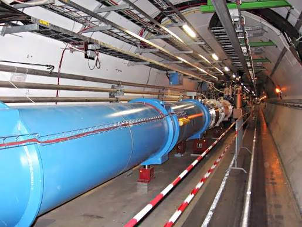

Как физики изучают природу?
Физическое исследование — целенаправленное изучение явлений природы средствами физики. Учёные наблюдают, задают вопросы, выдвигают предположения и проверяют их.
Основные методы физических исследований — экспериментальный и теоретический. Они дополняют друг друга: опыт даёт данные, а теория помогает их объяснить и предсказать новые результаты.
1. Наблюдение: замечаем явления
Наблюдение — восприятие природы для получения первоначальных данных и их дальнейшего анализа. Например, можно наблюдать, как тает снег или движутся облака.
Но впечатления могут обманывать! На рисунке в учебнике два отрезка кажутся разными, хотя их длины одинаковы. Проверить это можно линейкой.
2. Эксперимент: проверяем предположение
Эксперимент — исследование явления в условиях, которые контролирует исследователь. В отличие от простого наблюдения, при опыте специально создают нужные условия и часто выполняют измерения.
Исследователь за работой в современной физической лаборатории.
3. Гипотеза: ищем объяснение
Гипотеза — предположение, которое нужно проверить. Галилей предположил, что более медленное падение лёгких тел связано с сопротивлением воздуха.
Пизанская башня в Италии
В учебнике описан опыт Ньютона с монетой и пером в стеклянной трубке. Когда воздух из трубки удалили, оба тела достигли её дна одновременно: сопротивление воздуха перестало мешать падению.
4. Теория и новое знание
Теоретическое исследование включает размышления, анализ данных и математические расчёты. В параграфе показано, как Ньютон связал падение тел на Земле и движение планет законом всемирного тяготения.

Тоннель Большого адронного коллайдера в CERN
Путь исследования
- Использовать имеющиеся знания и провести наблюдения.
- Поставить вопрос, проанализировать данные и выдвинуть гипотезу.
- Проверить гипотезу экспериментом.
- Сделать вывод: поддерживают ли результаты гипотезу или противоречат ей?
- Получить новое знание и продолжить исследования.
Это упрощённая схема: в реальном исследовании учёные могут возвращаться к предыдущим этапам.
Попробуй объяснить!
В учебнике два отрезка кажутся неодинаковыми. Что здесь является наблюдением? Какую гипотезу можно выдвинуть? Как проверить её линейкой?